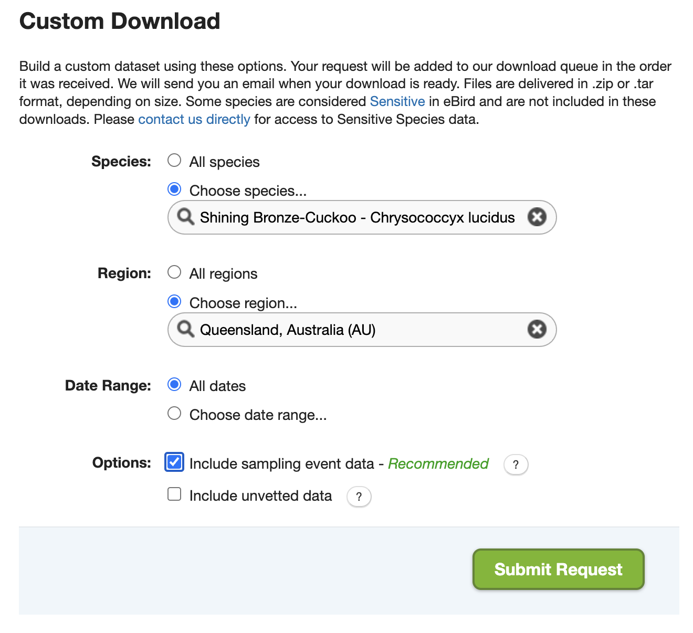
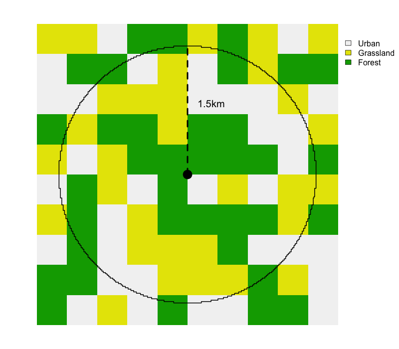
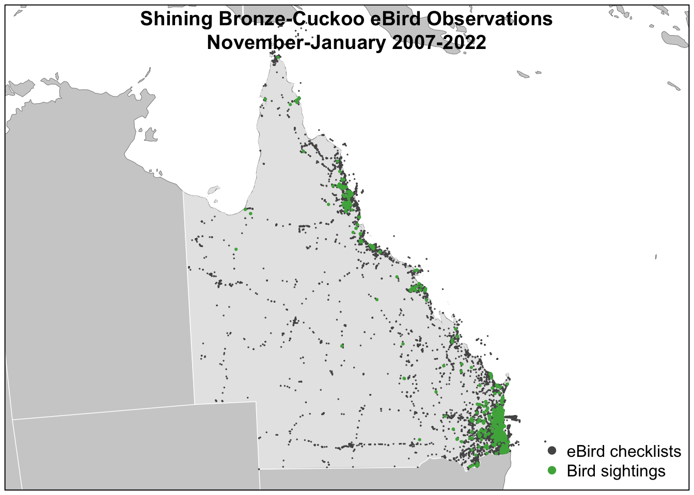
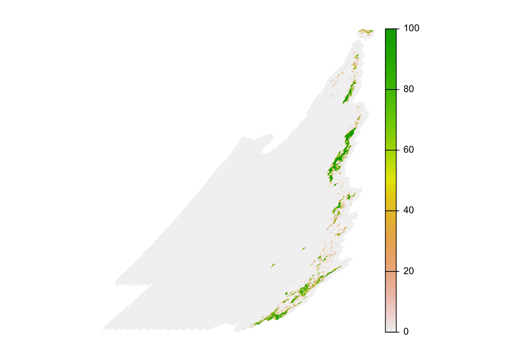
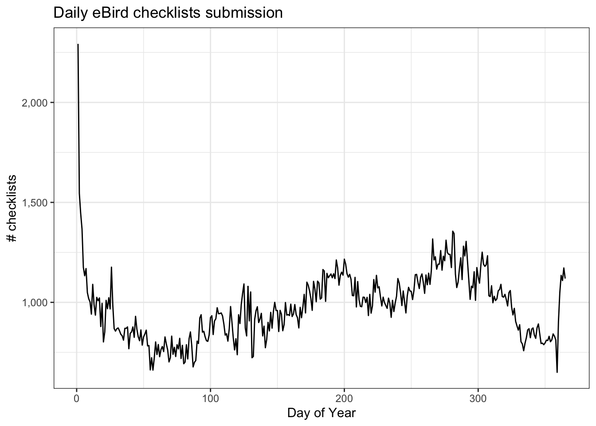
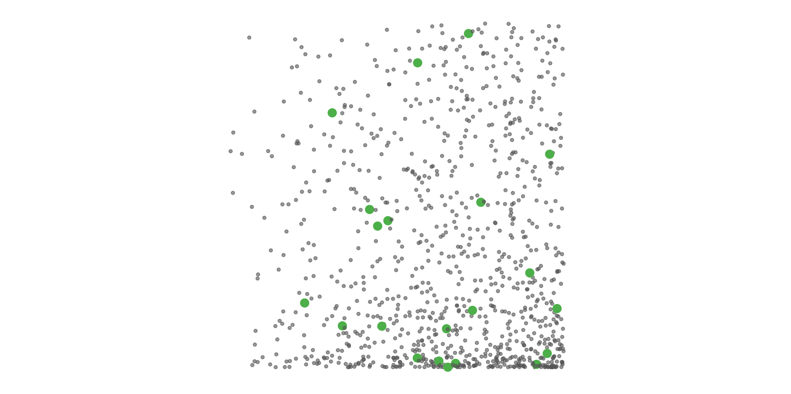
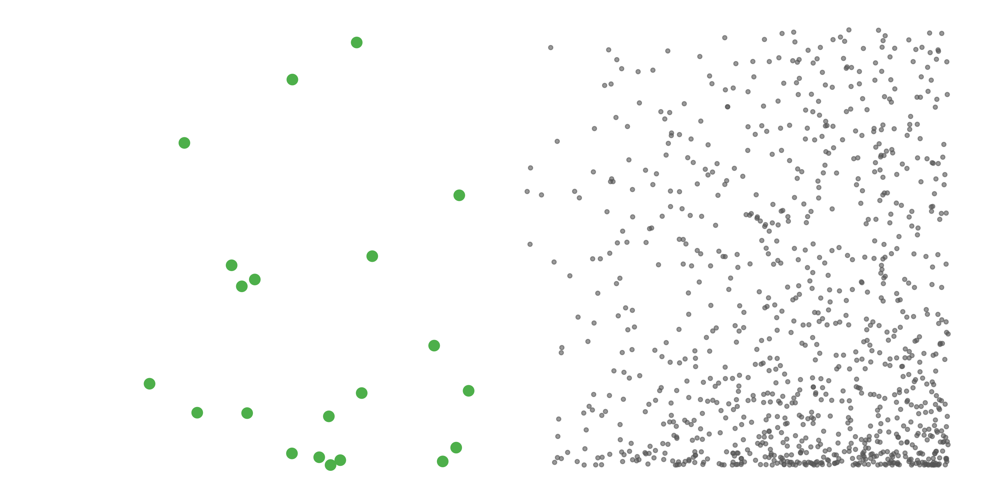
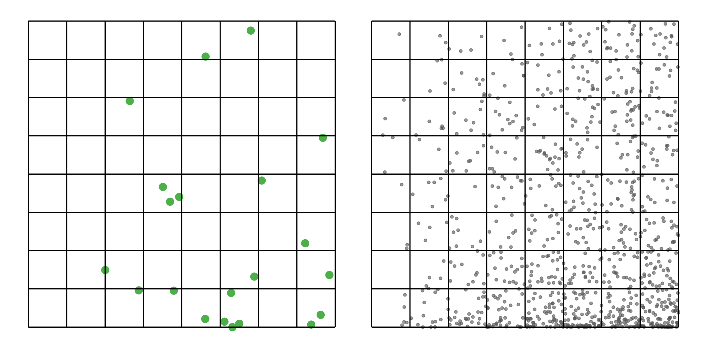
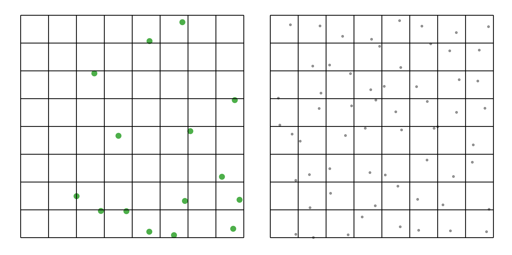
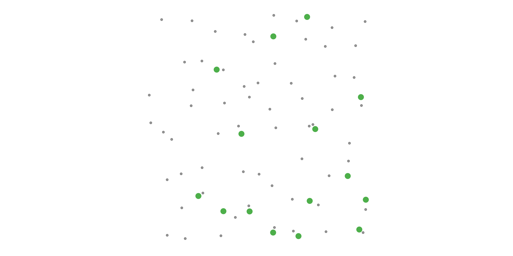

| eBird Reference Dataset (ERD) | eBird Basic Dataset (EBD) |
|---|---|
| contains only complete traveling and stationary counts from the last 15 years | contains all eBird observations except for sensitive species |
| updated annually | updated monthly |
| environmental variables assigned to checklists | complete set of variables from the eBird database including checklist comments, species comments, breeding codes, etc. |
| format is easier to work with in R |
1 eBird Data
eBird data are collected and organized around the concept of a checklist, representing observations from a single birding event, such as a 1 km walk through a park or 15 minutes observing bird feeders in your backyard. All eBird checklists contains a list of species observed and the location and time of the observations. For a subset of checklists, the observer will also provide counts of the number of individuals seen of each species, specify the amount of effort expended while collecting these data, and confirm that they are submitting a complete checklist of all the birds they were able to identify. The data provided by the checklists such as these is often referred to as semi-structured citizen science data.
Let’s compare two eBird checklists: an incidental observation with missing counts and a complete traveling count. Both checklists can be useful, but only the second checklist provides the type of semi-structured data required for more rigorous applications.
The first part of this lesson will work with the eBird Basic Dataset (EBD). This will allow users to prepare eBird data for relative abundance modeling up to the point of assigning environmental variables as predictors and will be useful for users after the workshop. For the sake of brevity, the second part of this lesson will provide data from the eBird Reference Dataset (ERD), the collection of semi-structured eBird data used by the eBird Status and Trends team for modeling species distributions and relative abundance. A subset of this dataset will be provided in the data package for this workshop.
Tip
This workshop will only cover the eBird Reference Dataset (ERD). For access to the full eBird dataset updated monthly, you’ll need to work with the eBird Basic Dataset (EBD). For details on working with the EBD consult the eBird Best Practices book. Some of the advantages and disadvantages of the two datasts are:
2 raw eBird Data (EBD)
eBird data are released as two tab-separated text files: the eBird Basic Dataset (EBD) containing observation data and the Sampling Event Data (SED) containing checklist data. These files are released monthly and contain all validated bird sightings in the eBird database at the time of release. In the EBD, each row corresponds to the sighting of a single species on a checklist, including the count and any other species-level information (e.g. age, sex, species comments, etc.). In the SED, each row corresponds to a checklist, including the date, time, location, effort (e.g. distance traveled, time spent, etc.), and any additional checklist-level information (e.g. whether this is a complete checklist or not).
2.1 Downloading data
In this workshop, we’ll use Shining Bronze-Cuckoo observations from Queensland, Australia as an example. We’ll start by downloading the corresponding eBird observation (EBD) and checklist (SED) data by visiting the eBird Basic Dataset download page and filling out the Custom Download form to request Shining Bronze-Cuckoo observations from Queensland. Make sure you check the box “Include sampling event data”, which will include the SED in the data download in addition to the EBD.

Tip
The eBird database contains a massive amount of data! When requesting eBird data to download it’s important to narrow the request to as small a subset of the data as possible. For example, if we request all Shining Bronze-Cuckoo observations globally, the dataset may be too large to work with in R. Instead, we’ve only requested data for a single state in Australia.
Once the data are ready, you will receive an email with a download link. The downloaded data will be in a compressed .zip format, and should be unarchived. The resulting directory will contain a two text files: one for the EBD (e.g. ebd_BR-RS_fotfly_smp_relJun-2023.txt) containing all the Shining Bronze-Cuckoo observations from Queensland, and one for the SED (e.g. ebd_BR-RS_fotfly_smp_relJun-2023_sampling.txt) containing all checklists from Queensland, The relJune-2023 component of the file name describes which version of the EBD this dataset came from; in this case it’s the June 2023 release.
If you would prefer to directly download the exact dataset used in this workshop, download the data package for this workshop.
2.2 Importing eBird data into R
The previous step left us with two tab separated text files, one for the EBD (i.e. observation data) and one for the SED (i.e. checklist data). Start a new RStudio project and put the downloaded text files in the data/ sub-directory of the project directory.
The auk R package is specifically designed for working with eBird data. It includes the functions read_ebd() and read_sampling() for importing the EBD and SED, respectively, into R. First let’s import the checklist data (SED).
library(auk)
library(dplyr)
library(ggplot2)
library(lubridate)
library(sf)
f_sed <- "data/ebd_AU-QLD_shbcuc1_smp_relSep-2023_sampling.txt"
checklists <- read_sampling(f_sed, unique = FALSE)
glimpse(checklists)
#> Rows: 755,445
#> Columns: 30
#> $ last_edited_date <chr> "2021-04-19 02:40:19.157994", "2021-10-22 20…
#> $ country <chr> "Australia", "Australia", "Australia", "Aust…
#> $ country_code <chr> "AU", "AU", "AU", "AU", "AU", "AU", "AU", "A…
#> $ state <chr> "Queensland", "Queensland", "Queensland", "Q…
#> $ state_code <chr> "AU-QLD", "AU-QLD", "AU-QLD", "AU-QLD", "AU-…
#> $ county <chr> "Brisbane", "Brisbane", "Brisbane", "Brisban…
#> $ county_code <chr> "AU-QLD-BRI", "AU-QLD-BRI", "AU-QLD-BRI", "A…
#> $ iba_code <chr> NA, NA, NA, NA, NA, NA, NA, NA, NA, NA, NA, …
#> $ bcr_code <int> NA, NA, NA, NA, NA, NA, NA, NA, NA, NA, NA, …
#> $ usfws_code <chr> NA, NA, NA, NA, NA, NA, NA, NA, NA, NA, NA, …
#> $ atlas_block <chr> NA, NA, NA, NA, NA, NA, NA, NA, NA, NA, NA, …
#> $ locality <chr> "Dowse Lagoon (Sandgate)", "Dowse Lagoon (Sa…
#> $ locality_id <chr> "L1896576", "L1896576", "L1896576", "L189657…
#> $ locality_type <chr> "H", "H", "H", "H", "H", "H", "H", "H", "H",…
#> $ latitude <dbl> -27.3, -27.3, -27.3, -27.3, -27.3, -27.3, -2…
#> $ longitude <dbl> 153, 153, 153, 153, 153, 153, 153, 153, 153,…
#> $ observation_date <date> 2021-04-19, 2021-10-23, 2021-04-25, 2021-11…
#> $ time_observations_started <chr> "15:40:00", "06:04:00", "12:25:00", "13:53:0…
#> $ observer_id <chr> "obs427309", "obs427309", "obs535737", "obs9…
#> $ sampling_event_identifier <chr> "S85875959", "S96568064", "S86299492", "S978…
#> $ protocol_type <chr> "Traveling", "Traveling", "Stationary", "Tra…
#> $ protocol_code <chr> "P22", "P22", "P21", "P22", "P22", "P21", "P…
#> $ project_code <chr> "EBIRD", "EBIRD", "EBIRD", "EBIRD", "EBIRD_A…
#> $ duration_minutes <int> 59, 138, 33, 46, 75, 16, 67, 104, 28, 45, NA…
#> $ effort_distance_km <dbl> 1.954, 3.437, NA, 1.610, 1.030, NA, 1.310, 2…
#> $ effort_area_ha <dbl> NA, NA, NA, NA, NA, NA, NA, NA, NA, NA, NA, …
#> $ number_observers <int> 1, 1, 1, 1, 1, 1, 1, 1, 1, 1, 1, 1, 1, 1, 1,…
#> $ all_species_reported <lgl> TRUE, TRUE, TRUE, TRUE, TRUE, TRUE, TRUE, TR…
#> $ group_identifier <chr> NA, NA, NA, NA, NA, NA, NA, NA, NA, NA, NA, …
#> $ trip_comments <chr> NA, NA, NA, "Clear skies light breeze. Targe…
Checkpoint
Take some time to explore the variables in the checklist dataset. If you’re unsure about any of the variables, consult the metadata document that came with the data download (eBird_Basic_Dataset_Metadata_v1.14.pdf).
For some applications, only the checklist data are required. For example, the checklist data can be used to investigate the spatial and temporal distribution of eBird data within a region. This dataset can also be used to explore how much variation there is in the observation effort variables and identify checklists that have low spatial or temporal precision.
Next, let’s import the observation data.
f_ebd <- "data/ebd_AU-QLD_shbcuc1_smp_relSep-2023.txt"
observations <- read_ebd(f_ebd, unique = FALSE, rollup = FALSE)
glimpse(observations)
#> Rows: 23,250
#> Columns: 49
#> $ global_unique_identifier <chr> "URN:CornellLabOfOrnithology:EBIRD:OBS90068…
#> $ last_edited_date <chr> "2020-04-23 01:19:06", "2021-03-24 06:05:52…
#> $ taxonomic_order <dbl> 3281, 3281, 3281, 3284, 3281, 3281, 3281, 3…
#> $ category <chr> "species", "species", "species", "issf", "s…
#> $ taxon_concept_id <chr> "avibase-19268395", "avibase-19268395", "av…
#> $ common_name <chr> "Shining Bronze-Cuckoo", "Shining Bronze-Cu…
#> $ scientific_name <chr> "Chrysococcyx lucidus", "Chrysococcyx lucid…
#> $ subspecies_common_name <chr> NA, NA, NA, "Shining Bronze-Cuckoo (Shining…
#> $ subspecies_scientific_name <chr> NA, NA, NA, "Chrysococcyx lucidus lucidus",…
#> $ exotic_code <lgl> NA, NA, NA, NA, NA, NA, NA, NA, NA, NA, NA,…
#> $ observation_count <chr> "1", "1", "1", "1", "1", "3", "2", "1", "1"…
#> $ breeding_code <chr> NA, NA, NA, NA, NA, NA, NA, NA, NA, NA, NA,…
#> $ breeding_category <chr> NA, NA, NA, NA, NA, NA, NA, NA, NA, NA, NA,…
#> $ behavior_code <chr> NA, NA, NA, NA, NA, NA, NA, NA, NA, NA, NA,…
#> $ age_sex <chr> NA, NA, NA, NA, NA, NA, NA, NA, NA, NA, NA,…
#> $ country <chr> "Australia", "Australia", "Australia", "Aus…
#> $ country_code <chr> "AU", "AU", "AU", "AU", "AU", "AU", "AU", "…
#> $ state <chr> "Queensland", "Queensland", "Queensland", "…
#> $ state_code <chr> "AU-QLD", "AU-QLD", "AU-QLD", "AU-QLD", "AU…
#> $ county <chr> "Mackay", "Moreton Bay", "Ipswich", "Sunshi…
#> $ county_code <chr> "AU-QLD-MAC", "AU-QLD-MRB", "AU-QLD-IPS", "…
#> $ iba_code <chr> NA, NA, NA, NA, NA, NA, NA, NA, NA, NA, NA,…
#> $ bcr_code <int> NA, NA, NA, NA, NA, NA, NA, NA, NA, NA, NA,…
#> $ usfws_code <chr> NA, NA, NA, NA, NA, NA, NA, NA, NA, NA, NA,…
#> $ atlas_block <chr> NA, NA, NA, NA, NA, NA, NA, NA, NA, NA, NA,…
#> $ locality <chr> "Finch Hatton Gorge", "Lake Samsonvale--Gol…
#> $ locality_id <chr> "L921597", "L692632", "L4784405", "L1827741…
#> $ locality_type <chr> "H", "H", "P", "H", "H", "H", "P", "H", "H"…
#> $ latitude <dbl> -21.1, -27.3, -27.5, -26.6, -27.7, -27.3, -…
#> $ longitude <dbl> 149, 153, 153, 153, 153, 153, 153, 153, 153…
#> $ observation_date <date> 2019-08-30, 2019-10-23, 2019-09-21, 2019-0…
#> $ time_observations_started <chr> "05:51:00", "05:09:00", "06:30:00", "09:41:…
#> $ observer_id <chr> "obsr1490162", "obsr277790", "obsr186524", …
#> $ sampling_event_identifier <chr> "S67655665", "S61014875", "S59994086", "S53…
#> $ protocol_type <chr> "Stationary", "Traveling", "Traveling", "Tr…
#> $ protocol_code <chr> "P21", "P22", "P22", "P22", "P22", "P22", "…
#> $ project_code <chr> "EBIRD_AU", "EBIRD_AU", "EBIRD", "EBIRD", "…
#> $ duration_minutes <int> 540, 361, 95, 61, 240, 115, 70, 85, 60, 141…
#> $ effort_distance_km <dbl> NA, 5.240, 0.701, 2.000, 4.500, 1.000, 1.27…
#> $ effort_area_ha <dbl> NA, NA, NA, NA, NA, NA, NA, NA, NA, NA, NA,…
#> $ number_observers <int> 1, 1, 1, 2, 2, 1, 2, 1, 1, 2, 3, 1, 1, 4, 1…
#> $ all_species_reported <lgl> TRUE, TRUE, TRUE, TRUE, TRUE, TRUE, TRUE, T…
#> $ group_identifier <chr> NA, NA, NA, NA, NA, NA, NA, NA, NA, "G43416…
#> $ has_media <lgl> FALSE, FALSE, FALSE, FALSE, FALSE, FALSE, F…
#> $ approved <lgl> TRUE, TRUE, TRUE, TRUE, TRUE, TRUE, TRUE, T…
#> $ reviewed <lgl> FALSE, FALSE, FALSE, FALSE, FALSE, FALSE, F…
#> $ reason <chr> NA, NA, NA, NA, NA, NA, NA, NA, NA, NA, NA,…
#> $ trip_comments <chr> "Transferred from Daily Checklist.", NA, NA…
#> $ species_comments <chr> "Heard.", NA, NA, NA, NA, NA, "1 immature."…
Checkpoint
Take some time to explore the variables in the observation dataset. Notice that the EBD duplicates many of the checklist-level variables from the SED.
When we read the data into R, we used unique = FALSE and rollup = FALSE. By default the read functions in auk perform two important pre-processing steps: combining duplicate shared checklists and taxonomic rollup. We intentionally turned off this functionality for the purposes of demonstration.
2.2.2 Taxonomic rollup
eBird observations can be made at levels below species (e.g. subspecies) or above species (e.g. a bird that was identified as a duck, but the species could not be determined); however, for most uses we’ll want observations at the species level. This is especially true if we want to produce detection/non-detection data from complete checklists because “complete” only applies at the species level.
Tip
In the example dataset used for this workshop, these taxonomic issues don’t apply. We have requested Shining Bronze-Cuckoo observations, so we haven’t received any observations for taxa above species. However, there are records of Shining Bronze-Cuckoo (Shining) and Shining Bronze-Cuckoo (Golden) in Queensland during this time period (e.g., this checklist with photos. Accordingly, to use all records, we need to rollup these two subspecies into one set of species-level information. This can happen in many situations. For example, this checklist has 10 Yellow-rumped Warblers, 5 each of two Yellow-rumped Warbler subspecies, and one hybrid between the two subspecies. auk_rollup() will combine all four of these observations into a single Yellow-rumped Warbler observation.
The function auk_rollup() drops all observations not identifiable to a species and rolls up all observations reported below species to the species level.
observations_rollup <- auk_rollup(observations)
# only checklist example with both subspecies and one species-level entry
observations %>%
filter(sampling_event_identifier == "S102653162") %>%
select(sampling_event_identifier, common_name, subspecies_common_name,
observation_count)
#> # A tibble: 3 × 4
#> sampling_event_identifier common_name subspecies_common_name observation_count
#> <chr> <chr> <chr> <chr>
#> 1 S102653162 Shining Br… Shining Bronze-Cuckoo… 1
#> 2 S102653162 Shining Br… <NA> 2
#> 3 S102653162 Shining Br… Shining Bronze-Cuckoo… 1
observations_rollup %>%
filter(sampling_event_identifier == "S102653162") %>%
select(sampling_event_identifier, common_name,
observation_count)
#> # A tibble: 1 × 3
#> sampling_event_identifier common_name observation_count
#> <chr> <chr> <chr>
#> 1 S102653162 Shining Bronze-Cuckoo 4
Tip
If multiple taxa on a single checklist roll up to the same species, auk_rollup() attempts to combine them intelligently. If each observation has a count, those counts are added together, but if any of the observations is missing a count (i.e. the count is “X”) the combined observation is also assigned an “X”. In the example checklist from the previous tip, with four taxa all rolling up to Yellow-rumped Warbler, auk_rollup() will add the four counts together to get 21 Yellow-rumped Warblers (10 + 5 + 5 + 1).
2.3 Generating detection/non-detection data
Complete eBird checklists are extremely valuable because, for all species that weren’t reported, we can infer counts of 0. This allows us to convert eBird from presence only data to detection/non-detection data, which allows for much more robust analyses. Note that we don’t use the term presence/absence data here because a non-detection doesn’t necessarily imply the species was absent, only that the observer didn’t detect and identify it.
We refer to the process of producing detection/non-detection data as “zero-filling” the eBird data because we’re filling in the missing zeros. We’ll read the eBird data into R again, filter to only complete checklists, then use the function auk_zerofill() to generate detection/non-detection data. Note that shared checklists are combined and taxonomic rollup is performed by default when using the read_*() functions from auk.
# import checklist data
checklists <- read_sampling(f_sed) %>%
# subset to complete checklists
filter(all_species_reported)
# import observation data
observations <- read_ebd(f_ebd) %>%
# subset to complete checklists
filter(all_species_reported)
# zero-fill to produce detection/non-detection data
zf <- auk_zerofill(observations, checklists, collapse = TRUE)
glimpse(zf)
#> Rows: 509,294
#> Columns: 34
#> $ checklist_id <chr> "S85875959", "S96568064", "S86299492", "S978…
#> $ last_edited_date <chr> "2021-04-19 02:40:19.157994", "2021-10-22 20…
#> $ country <chr> "Australia", "Australia", "Australia", "Aust…
#> $ country_code <chr> "AU", "AU", "AU", "AU", "AU", "AU", "AU", "A…
#> $ state <chr> "Queensland", "Queensland", "Queensland", "Q…
#> $ state_code <chr> "AU-QLD", "AU-QLD", "AU-QLD", "AU-QLD", "AU-…
#> $ county <chr> "Brisbane", "Brisbane", "Brisbane", "Brisban…
#> $ county_code <chr> "AU-QLD-BRI", "AU-QLD-BRI", "AU-QLD-BRI", "A…
#> $ iba_code <chr> NA, NA, NA, NA, NA, NA, NA, NA, NA, NA, NA, …
#> $ bcr_code <int> NA, NA, NA, NA, NA, NA, NA, NA, NA, NA, NA, …
#> $ usfws_code <chr> NA, NA, NA, NA, NA, NA, NA, NA, NA, NA, NA, …
#> $ atlas_block <chr> NA, NA, NA, NA, NA, NA, NA, NA, NA, NA, NA, …
#> $ locality <chr> "Dowse Lagoon (Sandgate)", "Dowse Lagoon (Sa…
#> $ locality_id <chr> "L1896576", "L1896576", "L1896576", "L189657…
#> $ locality_type <chr> "H", "H", "H", "H", "H", "H", "H", "H", "H",…
#> $ latitude <dbl> -27.3, -27.3, -27.3, -27.3, -27.3, -27.3, -2…
#> $ longitude <dbl> 153, 153, 153, 153, 153, 153, 153, 153, 153,…
#> $ observation_date <date> 2021-04-19, 2021-10-23, 2021-04-25, 2021-11…
#> $ time_observations_started <chr> "15:40:00", "06:04:00", "12:25:00", "13:53:0…
#> $ observer_id <chr> "obs427309", "obs427309", "obs535737", "obs9…
#> $ sampling_event_identifier <chr> "S85875959", "S96568064", "S86299492", "S978…
#> $ protocol_type <chr> "Traveling", "Traveling", "Stationary", "Tra…
#> $ protocol_code <chr> "P22", "P22", "P21", "P22", "P22", "P21", "P…
#> $ project_code <chr> "EBIRD", "EBIRD", "EBIRD", "EBIRD", "EBIRD_A…
#> $ duration_minutes <int> 59, 138, 33, 46, 75, 16, 67, 104, 28, 45, 80…
#> $ effort_distance_km <dbl> 1.954, 3.437, NA, 1.610, 1.030, NA, 1.310, 2…
#> $ effort_area_ha <dbl> NA, NA, NA, NA, NA, NA, NA, NA, NA, NA, NA, …
#> $ number_observers <int> 1, 1, 1, 1, 1, 1, 1, 1, 1, 1, 1, 1, 1, 1, 1,…
#> $ all_species_reported <lgl> TRUE, TRUE, TRUE, TRUE, TRUE, TRUE, TRUE, TR…
#> $ group_identifier <chr> NA, NA, NA, NA, NA, NA, NA, NA, NA, NA, NA, …
#> $ trip_comments <chr> NA, NA, NA, "Clear skies light breeze. Targe…
#> $ scientific_name <chr> "Chrysococcyx lucidus", "Chrysococcyx lucidu…
#> $ observation_count <chr> "0", "0", "0", "0", "0", "0", "0", "0", "0",…
#> $ species_observed <lgl> FALSE, FALSE, FALSE, FALSE, FALSE, FALSE, FA…The observation_count variable has true counts as well as “X”s, which indicate that the species was detected but the number of individuals was not counted. auk_zerofill() adds a new binary column, species_observed, indicating whether or not the species was detected.
select(zf, observation_count, species_observed) %>%
head(10)
#> # A tibble: 10 × 2
#> observation_count species_observed
#> <chr> <lgl>
#> 1 0 FALSE
#> 2 0 FALSE
#> 3 0 FALSE
#> 4 0 FALSE
#> 5 0 FALSE
#> 6 0 FALSE
#> # ℹ 4 more rowsLet’s convert the “X”s to NAs and transform observation_count to an integer variable.
zf$observation_count <- if_else(zf$observation_count == "X",
NA_character_, zf$observation_count) %>%
as.integer()
select(zf, observation_count, species_observed) %>%
head(10)
#> # A tibble: 10 × 2
#> observation_count species_observed
#> <int> <lgl>
#> 1 0 FALSE
#> 2 0 FALSE
#> 3 0 FALSE
#> 4 0 FALSE
#> 5 0 FALSE
#> 6 0 FALSE
#> # ℹ 4 more rows2.4 Filtering data
Now that you have a detection/non-detection dataset, it’s likely that you want to do something with it. For example, you may want to make a map, identify priority areas for a species, or train a species distribution model. Regardless of the specific application, it’s likely that some amount of filtering of the data is required first. Some of the ways you may want to filter eBird data include:
- Temporal filtering: filter the data to a specific range of years or to a specific time of year.
- Spatial filtering: filter the data to focus on a specific region, e.g. a protected area.
- Increasing precision: some eBird checklists are quite long in distance or duration leading to spatial or temporal imprecision. By removing longer checklists we can increase the spatial precision of the dataset.
- Reducing variation in effort: unlike structured scientific surveys, data can be submitted to eBird using a variety of protocols and there is significant variation in effort between checklists in the eBird dataset. Variation in protocol and effort leads to variation in detectability (more effort generally leads to higher detectability). We can choose to impose more structure on the eBird dataset by filtering to reduce variation in protocol and effort.
The specific filtering you apply will depend on how you intend to use the eBird data. However, for the sake of this example, let’s filter the eBird data to only traveling and stationary checklists from 2013-2022 that are less than 6 hours in duration and 10 km in length.
zf_filtered <- zf %>%
filter(year(observation_date) >= 2013, year(observation_date) <= 2022,
protocol_type %in% c("Traveling", "Stationary"),
duration_minutes < 6 * 60,
effort_distance_km < 10 | protocol_type == "Stationary")
nrow(zf)
#> [1] 509294
nrow(zf_filtered)
#> [1] 342881We reduced the number of checklists by 166,413, but the checklists remaining are of higher quality.
Finally, many of the columns in this data frame are unnecessary or redundant, so we’ll select only the columns we need.
checklists_zf <- zf_filtered %>%
select(checklist_id,
latitude, longitude,
observation_date, time_observations_started,
protocol_type,
duration_minutes, effort_distance_km, number_observers,
observation_count, species_observed)2.5 Environmental Covariate Assignment
At this point, if you were planning to run a species distribution model with this data, you’d want some environmental variables as predictors. However, adding environmental variables can be onerous, computationally expensive, and varies based on use case. We provide guidance in our “Best Practices for Using eBird Data” document on extracting environmental variables to use with eBird data. For continuing this work on your own, please use that reference. For the remainder of this workshop (cooking show), we’re going to call on the magic of television, reach under the counter and pull out a fully baked cake that we can frost and decorate for the rest of the day.
3 eBird Reference Dataset (ERD)
The eBird Reference Dataset (ERD) is a subset of the full eBird database created annually for eBird Status and Trends modeling. Only semi-structured (complete checklists with effort information) traveling and stationary counts from the last 15 years are included in the ERD and we assign a set of environmental variables assigned to checklist. In the following sections we’ll provide an introduction to the ERD, describe the associated prediction grid used to make predictions across space, and highlight some of the challenges associated with using eBird data for analysis.
The ERD is distributed in two parts: observation data and checklist data. In the observation dataset, each row corresponds to the sighting of a single species on a checklist, including the count and any other species-level information. In the checklist dataset, each row corresponds to a checklist, including the date, time, location, effort (e.g. distance traveled, time spent, etc.), and any additional checklist-level information.
For this workshop, and extract of the ERD is provided in the workshop data package. The observations and checklsits datasets are provided in parquet format, an open source standard for efficient storage and retrieval of tabular data. If you haven’t already done so, following the instructions in the Introduction to create an RStudio project and download the workshop data package. The parquet files should be located at:
data/ebird_observations_chile_2021.parquet
data/ebird_checklists_chile_2021.parquetLet’s start by reading these two datasets into R using the arrow package and exploring them. We’ll start with the checklist dataset.
library(arrow)
library(auk)
library(dplyr)
library(ebirdst)
library(ggplot2)
library(sf)
library(terra)
checklists <- read_parquet("data/ebird_checklists_chile_2021.parquet")
glimpse(checklists)
#> Rows: 186,908
#> Columns: 98
#> $ checklist_id <int> 100062145, 100164965, 100241802, 1003…
#> $ observer_id <int> 796344, 2898939, 1676221, 185941, 534…
#> $ loc_id <chr> "Trax_S100062145", "L6626679", "Trax_…
#> $ longitude <dbl> -71.5, -71.0, -73.1, -70.2, -71.4, -7…
#> $ latitude <dbl> -32.9, -35.6, -40.6, -33.4, -32.7, -3…
#> $ is_stationary <dbl> 0, 0, 1, 0, 1, 0, 0, 0, 1, 0, 0, 0, 1…
#> $ year <int> 2021, 2021, 2021, 2012, 2021, 2021, 2…
#> $ day_of_year <dbl> 363, 365, 361, 52, 355, 360, 52, 55, …
#> $ hours_of_day <dbl> 10.95, 12.58, 16.05, 10.50, 9.70, 8.3…
#> $ solar_noon_diff_mid <dbl> -2.805, 1.778, 2.178, -2.936, -3.771,…
#> $ effort_hours <dbl> 0.134, 6.000, 0.084, 1.000, 0.567, 1.…
#> $ effort_distance_km <dbl> 0.340, 10.000, 0.000, 1.000, 0.000, 0…
#> $ effort_speed_kmph <dbl> 2.5373, 1.6667, 0.0000, 1.0000, 0.000…
#> $ number_observers <int> 1, 2, 1, 1, 1, 3, 1, 1, 1, 1, 1, 1, 1…
#> $ cds_u10 <dbl> 1.697, 3.316, 0.665, 1.505, 1.937, 0.…
#> $ cds_v10 <dbl> -3.1903, -1.0040, 3.4476, 0.5027, -1.…
#> $ cds_d2m <dbl> 12.541, 5.630, 13.361, -0.621, 12.222…
#> $ cds_t2m <dbl> 14.78, 19.96, 25.15, 12.15, 14.30, 11…
#> $ cds_hcc <dbl> 0.00000, 0.00000, 0.00000, 0.00000, 0…
#> $ cds_i10fg <dbl> 7.26, 12.81, 8.13, 8.37, 5.12, 4.71, …
#> $ cds_mcc <dbl> 0.0000, 0.0000, 0.6003, 0.0000, 0.000…
#> $ cds_lcc <dbl> 0.95340, 0.00000, 0.61487, 0.00000, 0…
#> $ cds_sf <dbl> 0, 0, 0, 0, 0, 0, 0, 0, 0, 0, 0, 0, 0…
#> $ cds_rf <dbl> 0, 0, 0, 0, 0, 0, 0, 0, 0, 0, 0, 0, 0…
#> $ cds_slc <dbl> 65.10, -30.67, -67.19, -41.09, 33.80,…
#> $ cds_msl <dbl> 101779, 101232, 101667, 101732, 10144…
#> $ eastness_1km_median <dbl> -0.00411, 0.00732, 0.01700, 0.04960, …
#> $ eastness_1km_sd <dbl> 0.2935, 0.2253, 0.1927, 0.1467, 0.244…
#> $ eastness_90m_median <dbl> -3.69e-02, 4.44e-02, -1.63e-03, 3.76e…
#> $ eastness_90m_sd <dbl> 0.04190, 0.25816, 0.02712, 0.28047, 0…
#> $ northness_1km_median <dbl> -0.169959, 0.052624, 0.505542, 0.0875…
#> $ northness_1km_sd <dbl> 0.1812, 0.2881, 0.2597, 0.2418, 0.225…
#> $ northness_90m_median <dbl> 5.68e-03, -5.46e-02, 9.70e-03, -2.38e…
#> $ northness_90m_sd <dbl> 0.03915, 0.24051, 0.04255, 0.12762, 0…
#> $ elev_30m_median <dbl> 34, 2130, 38, 2833, 76, 2904, 3146, 1…
#> $ elev_30m_sd <dbl> 33.82, 117.60, 16.55, 187.94, 25.46, …
#> $ elev_250m_median <dbl> 43.00, 2137.00, 45.00, 2843.00, 50.50…
#> $ elev_250m_sd <dbl> 38.21, 101.61, 14.22, 181.66, 58.86, …
#> $ island <dbl> 30002, 30002, 30002, 30002, 30002, 30…
#> $ astwbd_fs_c1_1500_ed <dbl> 3.38, 0.00, 0.00, 0.00, 5.55, 0.00, 0…
#> $ astwbd_fs_c1_1500_pland <dbl> 9.07, 0.00, 0.00, 0.00, 44.78, 0.00, …
#> $ astwbd_fs_c2_1500_ed <dbl> 0, 0, 0, 0, 0, 0, 0, 0, 0, 0, 0, 0, 0…
#> $ astwbd_fs_c2_1500_pland <dbl> 0, 0, 0, 0, 0, 0, 0, 0, 0, 0, 0, 0, 0…
#> $ astwbd_fs_c3_1500_ed <dbl> 0.00, 0.00, 0.00, 0.00, 0.00, 0.00, 0…
#> $ astwbd_fs_c3_1500_pland <dbl> 0.0, 0.0, 0.0, 0.0, 0.0, 0.0, 0.0, 0.…
#> $ gp_rtp_1 <dbl> 0, 0, 537, 0, 0, 0, 0, 0, 718, 0, 0, …
#> $ gp_rtp_2 <dbl> 391.3, 0.0, 40.7, 949.0, 328.6, 0.0, …
#> $ gp_rtp_3 <dbl> 0.0, 0.0, 24.3, 112.8, 0.0, 41.4, 0.0…
#> $ gp_rtp_4 <dbl> 0, 0, 0, 0, 0, 181, 0, 0, 0, 0, 0, 0,…
#> $ gp_rtp_5 <dbl> 0, 0, 0, 0, 0, 244, 0, 0, 0, 0, 0, 0,…
#> $ intertidal_fs_c1_1500_ed <dbl> 10.045, 0.000, 0.000, 0.000, 7.137, 0…
#> $ intertidal_fs_c1_1500_pland <dbl> 1.65, 0.00, 0.00, 0.00, 1.24, 0.00, 0…
#> $ ntl_mean <dbl> 1.75005, 0.00000, 28.90472, 1.67595, …
#> $ ntl_sd <dbl> 1.5571, 0.0000, 14.7225, 2.4289, 1.54…
#> $ mcd12q1_lccs1_fs_c1_1500_ed <dbl> 4.20, 14.10, 0.00, 7.19, 0.00, 5.40, …
#> $ mcd12q1_lccs1_fs_c1_1500_pland <dbl> 8.33, 36.73, 0.00, 63.89, 0.00, 47.22…
#> $ mcd12q1_lccs1_fs_c2_1500_ed <dbl> 0, 0, 0, 0, 0, 0, 0, 0, 0, 0, 0, 0, 0…
#> $ mcd12q1_lccs1_fs_c2_1500_pland <dbl> 0, 0, 0, 0, 0, 0, 0, 0, 0, 0, 0, 0, 0…
#> $ mcd12q1_lccs1_fs_c11_1500_ed <dbl> 0.00, 0.00, 0.00, 0.00, 0.00, 0.00, 0…
#> $ mcd12q1_lccs1_fs_c11_1500_pland <dbl> 0.0, 0.0, 0.0, 0.0, 0.0, 0.0, 0.0, 0.…
#> $ mcd12q1_lccs1_fs_c12_1500_ed <dbl> 0.00, 0.00, 0.00, 0.00, 0.00, 0.00, 0…
#> $ mcd12q1_lccs1_fs_c12_1500_pland <dbl> 0.00, 0.00, 0.00, 0.00, 0.00, 0.00, 0…
#> $ mcd12q1_lccs1_fs_c13_1500_ed <dbl> 0, 0, 0, 0, 0, 0, 0, 0, 0, 0, 0, 0, 0…
#> $ mcd12q1_lccs1_fs_c13_1500_pland <dbl> 0, 0, 0, 0, 0, 0, 0, 0, 0, 0, 0, 0, 0…
#> $ mcd12q1_lccs1_fs_c14_1500_ed <dbl> 0, 0, 0, 0, 0, 0, 0, 0, 0, 0, 0, 0, 0…
#> $ mcd12q1_lccs1_fs_c14_1500_pland <dbl> 0, 0, 0, 0, 0, 0, 0, 0, 0, 0, 0, 0, 0…
#> $ mcd12q1_lccs1_fs_c15_1500_ed <dbl> 0.00, 0.00, 0.00, 0.00, 0.00, 0.00, 0…
#> $ mcd12q1_lccs1_fs_c15_1500_pland <dbl> 0.00, 0.00, 0.00, 0.00, 0.00, 0.00, 0…
#> $ mcd12q1_lccs1_fs_c16_1500_ed <dbl> 0, 0, 0, 0, 0, 0, 0, 0, 0, 0, 0, 0, 0…
#> $ mcd12q1_lccs1_fs_c16_1500_pland <dbl> 0, 0, 0, 0, 0, 0, 0, 0, 0, 0, 0, 0, 0…
#> $ mcd12q1_lccs1_fs_c21_1500_ed <dbl> 3.60, 0.00, 0.00, 0.00, 0.00, 0.00, 0…
#> $ mcd12q1_lccs1_fs_c21_1500_pland <dbl> 5.56, 0.00, 0.00, 0.00, 0.00, 0.00, 0…
#> $ mcd12q1_lccs1_fs_c22_1500_ed <dbl> 13.19, 2.64, 3.08, 0.00, 6.68, 0.00, …
#> $ mcd12q1_lccs1_fs_c22_1500_pland <dbl> 61.11, 6.12, 89.80, 0.00, 61.90, 0.00…
#> $ mcd12q1_lccs1_fs_c31_1500_ed <dbl> 7.79, 2.20, 3.08, 0.00, 3.08, 3.00, 0…
#> $ mcd12q1_lccs1_fs_c31_1500_pland <dbl> 22.22, 10.20, 10.20, 0.00, 4.76, 5.56…
#> $ mcd12q1_lccs1_fs_c32_1500_ed <dbl> 0.00, 18.06, 0.00, 7.19, 0.00, 8.39, …
#> $ mcd12q1_lccs1_fs_c32_1500_pland <dbl> 0.00, 46.94, 0.00, 36.11, 0.00, 47.22…
#> $ mcd12q1_lccs1_fs_c41_1500_ed <dbl> 0, 0, 0, 0, 0, 0, 0, 0, 0, 0, 0, 0, 0…
#> $ mcd12q1_lccs1_fs_c41_1500_pland <dbl> 0, 0, 0, 0, 0, 0, 0, 0, 0, 0, 0, 0, 0…
#> $ mcd12q1_lccs1_fs_c42_1500_ed <dbl> 0.00, 0.00, 0.00, 0.00, 0.00, 0.00, 0…
#> $ mcd12q1_lccs1_fs_c42_1500_pland <dbl> 0.00, 0.00, 0.00, 0.00, 0.00, 0.00, 0…
#> $ mcd12q1_lccs1_fs_c43_1500_ed <dbl> 0.00, 0.00, 0.00, 0.00, 0.00, 0.00, 0…
#> $ mcd12q1_lccs1_fs_c43_1500_pland <dbl> 0.00, 0.00, 0.00, 0.00, 0.00, 0.00, 0…
#> $ mcd12q1_lccs1_fs_c255_1500_ed <dbl> 0, 0, 0, 0, 0, 0, 0, 0, 0, 0, 0, 0, 0…
#> $ mcd12q1_lccs1_fs_c255_1500_pland <dbl> 0, 0, 0, 0, 0, 0, 0, 0, 0, 0, 0, 0, 0…
#> $ mcd12q1_lccs2_fs_c25_1500_ed <dbl> 0, 0, 0, 0, 0, 0, 0, 0, 0, 0, 0, 0, 0…
#> $ mcd12q1_lccs2_fs_c25_1500_pland <dbl> 0, 0, 0, 0, 0, 0, 0, 0, 0, 0, 0, 0, 0…
#> $ mcd12q1_lccs2_fs_c35_1500_ed <dbl> 0, 0, 0, 0, 0, 0, 0, 0, 0, 0, 0, 0, 0…
#> $ mcd12q1_lccs2_fs_c35_1500_pland <dbl> 0, 0, 0, 0, 0, 0, 0, 0, 0, 0, 0, 0, 0…
#> $ mcd12q1_lccs2_fs_c36_1500_ed <dbl> 0.00, 0.00, 0.00, 0.00, 0.00, 0.00, 0…
#> $ mcd12q1_lccs2_fs_c36_1500_pland <dbl> 0.00, 0.00, 0.00, 0.00, 0.00, 0.00, 0…
#> $ mcd12q1_lccs3_fs_c27_1500_ed <dbl> 0.00, 0.00, 0.00, 0.00, 2.06, 0.00, 0…
#> $ mcd12q1_lccs3_fs_c27_1500_pland <dbl> 0.00, 0.00, 0.00, 0.00, 2.38, 0.00, 0…
#> $ mcd12q1_lccs3_fs_c50_1500_ed <dbl> 0.00, 0.00, 0.00, 0.00, 0.00, 0.00, 0…
#> $ mcd12q1_lccs3_fs_c50_1500_pland <dbl> 0.00, 0.00, 0.00, 0.00, 0.00, 0.00, 0…
#> $ mcd12q1_lccs3_fs_c51_1500_ed <dbl> 0.0, 0.0, 0.0, 0.0, 0.0, 2.4, 0.0, 0.…
#> $ mcd12q1_lccs3_fs_c51_1500_pland <dbl> 0.00, 0.00, 0.00, 0.00, 0.00, 2.78, 0…There are a huge number of columns in this data frame. The first set of variables provide standard information about the checklist: where and when did the observation occur, what type of search was conducted, and how much search effort was expended. Two important differences exist between these variables and what you will see if you look at the raw eBird dataset: when a GPS track is available we replace the checklist or hotspot location (latitude/longitude) with the centroid of the track and the time of the checklist is expressed as the difference between the checklist midpoint and solar noon, a more ecologically meaningful quantity.
All the remaining variables are not collected in eBird, they’re calculated and added by the Status and Trends team based on external data sets. First, those variables beginning with cds_, provides information about the weather at the time of the observation, which can impact detectibility. This is followed by a large suite of environmental variables summarized over a 3km diameter circular neighborhood around the checklist location, including variables describing: elevation and topography, land and water cover, roads, and night time lights (a proxy for urban development). Most variables are summarized as two quantities expressing composition (what habitat is available) and configuration (how that habitat is arranged spatially). For continuous variables, such as elevation, we use the median and standard deviation. For categorical variables, such as land cover class, we use percent landcover (pland) and edge density (ed).

pland for each class is the percent of the circle covered by that class. To calculate ed for each class, we add up the perimeter lengths of all patches of that class, then divide by the area of the circle.The land and water cover variables can be challenging to interpret based on their names alone (e.g. mcd12q1_lccs1_fs_c12_1500_pland); however, these names can be looked up in the ebirdst_predictors data frame from the ebirdst package. For example, let’s look up what mcd12q1_lccs1_fs_c12_1500_pland corresponds to.
filter(ebirdst_predictors, predictor == "mcd12q1_lccs1_fs_c12_1500_pland") %>%
select(predictor, predictor_label)
#> # A tibble: 1 × 2
#> predictor predictor_label
#> <chr> <chr>
#> 1 mcd12q1_lccs1_fs_c12_1500_pland Evergreen Broadleaf Forests PLAND
Checkpoint
Take some time to explore the variables in the checklist dataset. Try looking up a variable in ebirst_predictors. Ask for help if you need clarification on the meaning of any of the variables.
Now let’s look at the observation dataset.
observations <- read_parquet("data/ebird_observations_chile_2021.parquet")
glimpse(observations)
#> Rows: 2,167,750
#> Columns: 5
#> $ checklist_id <dbl> 1e+08, 1e+08, 1e+08, 1e+08, 1e+08, 1e+08, 1e+08, 1e+08, 1…
#> $ species_code <chr> "eardov1", "blcsis2", "gyhsif1", "houwre", "rebhaw2", "au…
#> $ valid <lgl> TRUE, TRUE, TRUE, TRUE, TRUE, TRUE, TRUE, TRUE, TRUE, TRU…
#> $ obs_detected <int> 1, 1, 1, 1, 1, 1, 1, 1, 1, 1, 1, 1, 1, 1, 1, 1, 1, 1, 1, …
#> $ obs_count <int> 2, 4, 2, 1, 1, 3, 1, 4, 1, NA, 1, NA, NA, NA, NA, NA, NA,…This is a much simpler dataset with only five columns:
checklist_id: unique identifier for the checklist that this observation belongs to. Allows joining the observation data to the checklist data.species_code: unique identifier for the species that this observation was made for.valid: a binary variable indicating is the observation was determined to be valid (TRUE) or invalid (FALSE) by the eBird reviewers.obs_detected: a binary variable indicating if the species was detected (1) or not detected (0). Since this is a dataset of observations only,obs_detectedis always 1; however, having this variable will become useful when we join to the checklist dataset in the next section.obs_count: count of the number of individuals or anNAif no count was provided (if an “X” was entered for count on the eBird checklist).
Tip
To look up the common name or scientific name of a species try appending the species code to the URL https://ebird.org/species/. For example, visit https://ebird.org/species/eardov1 to look up the species code eardov1. This information is also available in the ebird_taxonomy data frame in the auk package.
filter(ebird_taxonomy, species_code == "eardov1") %>%
select(species_code, common_name, scientific_name, family)
#> species_code common_name scientific_name family
#> 1 eardov1 Eared Dove Zenaida auriculata Columbidae3.1 Zero-filling eBird data
Complete eBird checklists are extremely valuable because, for all species that weren’t reported, we can infer counts of 0. This allows us to convert eBird from presence only data to detection/non-detection data, which allows for much more robust analyses. Note that we don’t use the term presence/absence data here because a non-detection doesn’t necessarily imply the species was absent, only that observer wasn’t able to detect and identify it.
We refer to the process of producing detection/non-detection data as “zero-filling” the eBird data because we’re filling in the missing zeros. Let’s consider observations of Chucao Tapaculo (species code chutap1).
chutap1_detections <- observations %>%
filter(species_code == "chutap1") %>%
select(checklist_id, valid, obs_detected, obs_count)Next join this set of detections to the complete set of checklists, including detections and non-detections.
chutap1_all <- left_join(checklists, chutap1_detections, by = "checklist_id") %>%
select(checklist_id, latitude, longitude, year, day_of_year,
valid, obs_detected, obs_count)
head(chutap1_all)
#> # A tibble: 6 × 8
#> checklist_id latitude longitude year day_of_year valid obs_detected obs_count
#> <dbl> <dbl> <dbl> <int> <dbl> <lgl> <int> <int>
#> 1 100062145 -32.9 -71.5 2021 363 NA NA NA
#> 2 100164965 -35.6 -71.0 2021 365 TRUE 1 NA
#> 3 100241802 -40.6 -73.1 2021 361 NA NA NA
#> 4 10034436 -33.4 -70.2 2012 52 NA NA NA
#> 5 100385722 -32.7 -71.4 2021 355 NA NA NA
#> 6 100390786 -33.3 -70.3 2021 360 NA NA NAFinally, for rows where Chucao Tapaculo was not detected we can replace the missing counts with 0. At this time, we recommend removing any checklists with valid == 0 because there is uncertainty about whether or not the species was detected.
chutap1_zf <- chutap1_all %>%
filter(is.na(valid) | valid == 1) %>%
mutate(
# checklist not in the observations dataset are non-detections
obs_detected = coalesce(obs_detected, 0L),
# non-detections correspond to a count of 0
obs_count = if_else(obs_detected == 1, obs_count, 0)
)We can now, for example, make a map of Chucao Tapaculo observations in the Chilean region of Los Lagos. We’ll use spatial data that was prepared in advance and provided in the data package.
# load and project gis data
map_proj <- "+proj=laea +lat_0=-40 +lon_0=-72"
ne_land <- read_sf("data/gis-data.gpkg", "ne_land") %>%
st_transform(crs = map_proj) %>%
st_geometry()
ne_country_lines <- read_sf("data/gis-data.gpkg", "ne_country_lines") %>%
st_transform(crs = map_proj) %>%
st_geometry()
ne_state_lines <- read_sf("data/gis-data.gpkg", "ne_state_lines") %>%
st_transform(crs = map_proj) %>%
st_geometry()
los_lagos <- read_sf("data/gis-data.gpkg", "ne_states") %>%
filter(state_code == "CL-LL") %>%
st_transform(crs = map_proj) %>%
st_geometry()
# prepare ebird data for mapping
chutap1_sf <- chutap1_zf %>%
# convert to spatial points
st_as_sf(coords = c("longitude", "latitude"), crs = 4326) %>%
st_transform(crs = map_proj)
# map
par(mar = c(0.25, 0.25, 0.25, 0.25))
# set up plot area
plot(st_geometry(los_lagos), col = NA, border = NA)
# contextual gis data
plot(ne_land, col = "#cfcfcf", border = "#888888", lwd = 0.5, add = TRUE)
plot(los_lagos, col = "#e6e6e6", border = NA, add = TRUE)
plot(ne_state_lines, col = "#ffffff", lwd = 0.75, add = TRUE)
plot(ne_country_lines, col = "#ffffff", lwd = 1.5, add = TRUE)
# ebird observations
# all
plot(chutap1_sf,
pch = 19, cex = 0.1, col = scales::alpha("#555555", 4),
add = TRUE)
#> Warning in plot.sf(chutap1_sf, pch = 19, cex = 0.1, col =
#> scales::alpha("#555555", : ignoring all but the first attribute
# detection
plot(filter(chutap1_sf, obs_detected == 1),
pch = 19, cex = 0.3, col = scales::alpha("#4daf4a", 1),
add = TRUE)
#> Warning in plot.sf(filter(chutap1_sf, obs_detected == 1), pch = 19, cex = 0.3,
#> : ignoring all but the first attribute
# legend
legend("bottomright", bty = "n",
col = c("#555555", "#4daf4a"),
legend = c("eBird checklists", "Chucao Tapaculo sightings"),
pch = 19)
box()
par(new = TRUE, mar = c(0, 0, 3, 0))
title("Chucao Tapaculo eBird Observations\nJune 2007-2021")
3.2 Prediction grid
The ultimate goal of modeling the occurrence or abundance of a species is frequently to produce a map showing the distribution of that species in space. To do so, we need to know the values of our predictor variables over the region that we intend to make predictions. To make this possible, the ERD is distributed with a prediction grid: a regular grid of points covering the entire globe spaced 3km apart for which all the environmental variables have been calculated for the year 2021. Internally, we often refer to this prediction grid as the Spatial Reference Dataset (SRD).
The data package for this course contains a subset of the prediction grid for Chile. The file data/ebird_prediction-grid_chile_2021.parquet contains the environmental variables for each point on the grid and the file data/prediction-grid_template.tif is a 3km by 3km raster template where each each cell center is a point on the prediction grid. Let’s start by examining the environmental variables.
prediction_grid <- read_parquet("data/ebird_prediction-grid_chile_2021.parquet")
glimpse(prediction_grid)
#> Rows: 151,313
#> Columns: 83
#> $ srd_id <int> 54237418, 54237419, 54237420, 5423742…
#> $ longitude <dbl> -69.4, -69.4, -69.4, -69.3, -69.3, -6…
#> $ latitude <dbl> -17, -17, -17, -17, -17, -17, -17, -1…
#> $ eastness_1km_median <dbl> -0.058229, -0.044364, -0.047317, -0.0…
#> $ eastness_1km_sd <dbl> 0.2181, 0.1155, 0.2455, 0.1704, 0.266…
#> $ eastness_90m_median <dbl> 0.06977, 0.03524, 0.00753, -0.02868, …
#> $ eastness_90m_sd <dbl> 0.1154, 0.1539, 0.1562, 0.0899, 0.112…
#> $ northness_1km_median <dbl> 0.01759, -0.00286, 0.02578, 0.08451, …
#> $ northness_1km_sd <dbl> 0.236, 0.251, 0.125, 0.278, 0.253, 0.…
#> $ northness_90m_median <dbl> -0.00962, -0.01659, 0.00475, -0.01966…
#> $ northness_90m_sd <dbl> 0.1396, 0.1397, 0.0844, 0.1282, 0.136…
#> $ elev_30m_median <dbl> 4271, 4073, 4051, 4008, 4167, 4116, 4…
#> $ elev_30m_sd <dbl> 76.5, 65.6, 104.6, 73.8, 82.4, 34.0, …
#> $ elev_250m_median <dbl> 4269, 4083, 4063, 4018, 4181, 4131, 4…
#> $ elev_250m_sd <dbl> 72.6, 58.7, 98.3, 73.8, 71.4, 30.8, 3…
#> $ island <dbl> 30002, 30002, 30002, 30002, 30002, 30…
#> $ astwbd_fs_c1_1500_ed <dbl> 0, 0, 0, 0, 0, 0, 0, 0, 0, 0, 0, 0, 0…
#> $ astwbd_fs_c1_1500_pland <dbl> 0, 0, 0, 0, 0, 0, 0, 0, 0, 0, 0, 0, 0…
#> $ astwbd_fs_c2_1500_ed <dbl> 0, 0, 0, 0, 0, 0, 0, 0, 0, 0, 0, 0, 0…
#> $ astwbd_fs_c2_1500_pland <dbl> 0, 0, 0, 0, 0, 0, 0, 0, 0, 0, 0, 0, 0…
#> $ astwbd_fs_c3_1500_ed <dbl> 0, 0, 0, 0, 0, 0, 0, 0, 0, 0, 0, 0, 0…
#> $ astwbd_fs_c3_1500_pland <dbl> 0, 0, 0, 0, 0, 0, 0, 0, 0, 0, 0, 0, 0…
#> $ gp_rtp_1 <dbl> 0, 0, 0, 0, 0, 0, 0, 0, 0, 0, 0, 0, 0…
#> $ gp_rtp_2 <dbl> 0, 0, 0, 0, 0, 0, 0, 0, 0, 0, 0, 0, 0…
#> $ gp_rtp_3 <dbl> 0.0, 505.6, 189.7, 132.4, 0.0, 219.8,…
#> $ gp_rtp_4 <dbl> 0.0, 0.0, 586.0, 321.2, 0.0, 678.3, 7…
#> $ gp_rtp_5 <dbl> 0, 0, 0, 0, 0, 0, 0, 0, 0, 0, 0, 0, 0…
#> $ intertidal_fs_c1_1500_ed <dbl> 0, 0, 0, 0, 0, 0, 0, 0, 0, 0, 0, 0, 0…
#> $ intertidal_fs_c1_1500_pland <dbl> 0, 0, 0, 0, 0, 0, 0, 0, 0, 0, 0, 0, 0…
#> $ ntl_mean <dbl> 0.000, 0.000, 0.000, 0.000, 0.000, 0.…
#> $ ntl_sd <dbl> 0.000, 0.000, 0.000, 0.000, 0.000, 0.…
#> $ mcd12q1_lccs1_fs_c1_1500_ed <dbl> 0, 0, 0, 0, 0, 0, 0, 0, 0, 0, 0, 0, 0…
#> $ mcd12q1_lccs1_fs_c1_1500_pland <dbl> 0, 0, 0, 0, 0, 0, 0, 0, 0, 0, 0, 0, 0…
#> $ mcd12q1_lccs1_fs_c2_1500_ed <dbl> 0, 0, 0, 0, 0, 0, 0, 0, 0, 0, 0, 0, 0…
#> $ mcd12q1_lccs1_fs_c2_1500_pland <dbl> 0, 0, 0, 0, 0, 0, 0, 0, 0, 0, 0, 0, 0…
#> $ mcd12q1_lccs1_fs_c11_1500_ed <dbl> 0, 0, 0, 0, 0, 0, 0, 0, 0, 0, 0, 0, 0…
#> $ mcd12q1_lccs1_fs_c11_1500_pland <dbl> 0, 0, 0, 0, 0, 0, 0, 0, 0, 0, 0, 0, 0…
#> $ mcd12q1_lccs1_fs_c12_1500_ed <dbl> 0, 0, 0, 0, 0, 0, 0, 0, 0, 0, 0, 0, 0…
#> $ mcd12q1_lccs1_fs_c12_1500_pland <dbl> 0, 0, 0, 0, 0, 0, 0, 0, 0, 0, 0, 0, 0…
#> $ mcd12q1_lccs1_fs_c13_1500_ed <dbl> 0, 0, 0, 0, 0, 0, 0, 0, 0, 0, 0, 0, 0…
#> $ mcd12q1_lccs1_fs_c13_1500_pland <dbl> 0, 0, 0, 0, 0, 0, 0, 0, 0, 0, 0, 0, 0…
#> $ mcd12q1_lccs1_fs_c14_1500_ed <dbl> 0, 0, 0, 0, 0, 0, 0, 0, 0, 0, 0, 0, 0…
#> $ mcd12q1_lccs1_fs_c14_1500_pland <dbl> 0, 0, 0, 0, 0, 0, 0, 0, 0, 0, 0, 0, 0…
#> $ mcd12q1_lccs1_fs_c15_1500_ed <dbl> 0, 0, 0, 0, 0, 0, 0, 0, 0, 0, 0, 0, 0…
#> $ mcd12q1_lccs1_fs_c15_1500_pland <dbl> 0, 0, 0, 0, 0, 0, 0, 0, 0, 0, 0, 0, 0…
#> $ mcd12q1_lccs1_fs_c16_1500_ed <dbl> 0, 0, 0, 0, 0, 0, 0, 0, 0, 0, 0, 0, 0…
#> $ mcd12q1_lccs1_fs_c16_1500_pland <dbl> 0, 0, 0, 0, 0, 0, 0, 0, 0, 0, 0, 0, 0…
#> $ mcd12q1_lccs1_fs_c21_1500_ed <dbl> 0, 0, 0, 0, 0, 0, 0, 0, 0, 0, 0, 0, 0…
#> $ mcd12q1_lccs1_fs_c21_1500_pland <dbl> 0, 0, 0, 0, 0, 0, 0, 0, 0, 0, 0, 0, 0…
#> $ mcd12q1_lccs1_fs_c22_1500_ed <dbl> 0, 0, 0, 0, 0, 0, 0, 0, 0, 0, 0, 0, 0…
#> $ mcd12q1_lccs1_fs_c22_1500_pland <dbl> 0, 0, 0, 0, 0, 0, 0, 0, 0, 0, 0, 0, 0…
#> $ mcd12q1_lccs1_fs_c31_1500_ed <dbl> 7.71, 11.99, 8.39, 13.88, 5.40, 7.19,…
#> $ mcd12q1_lccs1_fs_c31_1500_pland <dbl> 42.86, 66.67, 80.56, 38.10, 16.67, 78…
#> $ mcd12q1_lccs1_fs_c32_1500_ed <dbl> 9.76, 9.59, 6.00, 7.19, 11.39, 0.00, …
#> $ mcd12q1_lccs1_fs_c32_1500_pland <dbl> 26.19, 16.67, 13.89, 14.29, 33.33, 0.…
#> $ mcd12q1_lccs1_fs_c41_1500_ed <dbl> 0, 0, 0, 0, 0, 0, 0, 0, 0, 0, 0, 0, 0…
#> $ mcd12q1_lccs1_fs_c41_1500_pland <dbl> 0, 0, 0, 0, 0, 0, 0, 0, 0, 0, 0, 0, 0…
#> $ mcd12q1_lccs1_fs_c42_1500_ed <dbl> 0.00, 0.00, 0.00, 0.00, 0.00, 2.57, 4…
#> $ mcd12q1_lccs1_fs_c42_1500_pland <dbl> 0.00, 0.00, 0.00, 0.00, 0.00, 7.14, 2…
#> $ mcd12q1_lccs1_fs_c43_1500_ed <dbl> 7.19, 4.80, 3.60, 16.96, 14.39, 4.63,…
#> $ mcd12q1_lccs1_fs_c43_1500_pland <dbl> 30.95, 16.67, 5.56, 47.62, 50.00, 14.…
#> $ mcd12q1_lccs1_fs_c255_1500_ed <dbl> 0, 0, 0, 0, 0, 0, 0, 0, 0, 0, 0, 0, 0…
#> $ mcd12q1_lccs1_fs_c255_1500_pland <dbl> 0, 0, 0, 0, 0, 0, 0, 0, 0, 0, 0, 0, 0…
#> $ mcd12q1_lccs2_fs_c25_1500_ed <dbl> 0, 0, 0, 0, 0, 0, 0, 0, 0, 0, 0, 0, 0…
#> $ mcd12q1_lccs2_fs_c25_1500_pland <dbl> 0, 0, 0, 0, 0, 0, 0, 0, 0, 0, 0, 0, 0…
#> $ mcd12q1_lccs2_fs_c35_1500_ed <dbl> 0, 0, 0, 0, 0, 0, 0, 0, 0, 0, 0, 0, 0…
#> $ mcd12q1_lccs2_fs_c35_1500_pland <dbl> 0, 0, 0, 0, 0, 0, 0, 0, 0, 0, 0, 0, 0…
#> $ mcd12q1_lccs2_fs_c36_1500_ed <dbl> 0, 0, 0, 0, 0, 0, 0, 0, 0, 0, 0, 0, 0…
#> $ mcd12q1_lccs2_fs_c36_1500_pland <dbl> 0, 0, 0, 0, 0, 0, 0, 0, 0, 0, 0, 0, 0…
#> $ mcd12q1_lccs3_fs_c27_1500_ed <dbl> 0, 0, 0, 0, 0, 0, 0, 0, 0, 0, 0, 0, 0…
#> $ mcd12q1_lccs3_fs_c27_1500_pland <dbl> 0, 0, 0, 0, 0, 0, 0, 0, 0, 0, 0, 0, 0…
#> $ mcd12q1_lccs3_fs_c50_1500_ed <dbl> 0, 0, 0, 0, 0, 0, 0, 0, 0, 0, 0, 0, 0…
#> $ mcd12q1_lccs3_fs_c50_1500_pland <dbl> 0, 0, 0, 0, 0, 0, 0, 0, 0, 0, 0, 0, 0…
#> $ mcd12q1_lccs3_fs_c51_1500_ed <dbl> 1.54, 0.00, 0.00, 0.00, 1.80, 1.54, 1…
#> $ mcd12q1_lccs3_fs_c51_1500_pland <dbl> 2.38, 0.00, 0.00, 0.00, 2.78, 2.38, 2…
#> $ mod44w_oic_fs_c1_1500_ed <dbl> 0, 0, 0, 0, 0, 0, 0, 0, 0, 0, 0, 0, 0…
#> $ mod44w_oic_fs_c1_1500_pland <dbl> 0, 0, 0, 0, 0, 0, 0, 0, 0, 0, 0, 0, 0…
#> $ mod44w_oic_fs_c2_1500_ed <dbl> 0, 0, 0, 0, 0, 0, 0, 0, 0, 0, 0, 0, 0…
#> $ mod44w_oic_fs_c2_1500_pland <dbl> 0, 0, 0, 0, 0, 0, 0, 0, 0, 0, 0, 0, 0…
#> $ mod44w_oic_fs_c3_1500_ed <dbl> 0, 0, 0, 0, 0, 0, 0, 0, 0, 0, 0, 0, 0…
#> $ mod44w_oic_fs_c3_1500_pland <dbl> 0, 0, 0, 0, 0, 0, 0, 0, 0, 0, 0, 0, 0…
#> $ mcd12q1_lccs2_fs_c9_1500_ed <dbl> 0, 0, 0, 0, 0, 0, 0, 0, 0, 0, 0, 0, 0…
#> $ mcd12q1_lccs2_fs_c9_1500_pland <dbl> 0, 0, 0, 0, 0, 0, 0, 0, 0, 0, 0, 0, 0…These variables should be mostly familiar from the ERD, except for srd_id which is a unique identifier for each point on the grid. Next let’s load the raster template using the terra package.
raster_template <- rast("data/prediction-grid_template.tif")
raster_template
#> class : SpatRaster
#> dimensions : 5630, 13511, 1 (nrow, ncol, nlyr)
#> resolution : 2963, 2963 (x, y)
#> extent : -2e+07, 2e+07, -6673060, 1e+07 (xmin, xmax, ymin, ymax)
#> coord. ref. : +proj=sinu +lon_0=0 +x_0=0 +y_0=0 +R=6371007.181 +units=m +no_defs
#> source : prediction-grid_template.tif
#> name : mask
#> min value : 1
#> max value : 1This is a global 2.96km by 2.96km square grid in an equal area projection. We can use the terra function rasterize to insert values from the prediction grid into the template for mapping. For example, let’s make a raster dataset of percent cover of evergreen broadleaf forest (mcd12q1_lccs1_fs_c12_1500_pland).
forest_cover <- prediction_grid %>%
# convert to spatial object using sf
st_as_sf(coords = c("longitude", "latitude"), crs = 4326) %>%
# transform to the coordinate reference system of the raster
st_transform(crs = crs(raster_template)) %>%
# rasterize the points using the raster template
rasterize(raster_template, field = "mcd12q1_lccs1_fs_c12_1500_pland")Now we can make a simple map of evergreen broadleaf forest for Chile. Not that the raster template is global, but we can use trim() to remove all areas that have missing values for a map of Chile only.
plot(trim(forest_cover), axes = FALSE)
The map looks distorted because the prediction grid uses a sinusoidal projection, which works well for analysis but not for mapping. In the next lesson, we’ll demonstrate how to project data into a coordinate reference system more suitable for mapping.
3.3 Spatial and temporal bias
Despite the strengths of eBird data, species observations collected through citizen science projects exhibit both spatial and temporal bias requiring special care when using them for rigorous analyses. Spatial bias occurs because eBird participants are more likely to be collect data near their homes, in easily accessible areas such as roadsides, or in areas known to be good for birding. Looking at the above map of Chucao Tapaculo observations it’s clear that the eBird checklists are clustered around cities and roads. Temporal bias occurs because participants preferentially collect data when they are available, such as weekends, and at times of year when they expect to observe more birds, notably during the breeding season. We can plot the distribution of checklists over the days of the year to see this bias:
checklist_per_day <- checklists %>%
filter(day_of_year < 366) %>%
count(day_of_year)
ggplot(checklist_per_day) +
aes(x = day_of_year, y = n) +
geom_line() +
scale_y_continuous(labels = scales::comma) +
labs(x = "Day of Year", y = "# checklists",
title = "Daily eBird checklists submission") +
theme_gray()
Three is a clear seasonal pattern to the number of eBird checklists submitted (fewer checklists in the winter) as well as daily and weekly variation within seasons. In addition, there are two huge spikes in checklists submissions, one in May and the other in October, what do you think could be causing these sudden increases?
Finally, for most species, there is strong class imbalance in the data, meaning there are usually many more non-detections than detections. As a results, a distribution model predicting that the species is absent everywhere will have high accuracy, but no ecological value. For example, the prevalence rate of Chucao Tapaculo in Chile is only 5%.
mean(chutap1_zf$obs_detected)
#> [1] 0.0518To address these three issues (spatial bias, temporal bias, and class imbalance) we recommend subsampling the data using a technique called case controlled grid sampling. We overlay an equal area 3km by 3km grid over the checklists, then sample one detection and one non-detection from each grid cell for each week of each year. Let’s look at a simple example of how spatial grid sampling works.”





The function grid_sample_stratified() from the ebirdst package is specifically designed to perform case controlled grid sampling on eBird data. For example, let’s apply this technique to the Chucao Tapaculo observations.
# perform case controlled grid sampling
chutap1_sampled <- grid_sample_stratified(chutap1_zf,
obs_column = "obs_detected")
# how many checklists were removed?
nrow(chutap1_zf)
#> [1] 186906
nrow(chutap1_sampled)
#> [1] 77421
# how has prevalence changed
mean(chutap1_zf$obs_detected)
#> [1] 0.0518
mean(chutap1_sampled$obs_detected)
#> [1] 0.0729So, after sampling, we’re left with 41% of the observations we started with, but the spatial and temporal bias has been significantly reduced.
We now have the data and tools necessary to model relative abundance using eBird data, which will be the focus of ?sec-abundance.